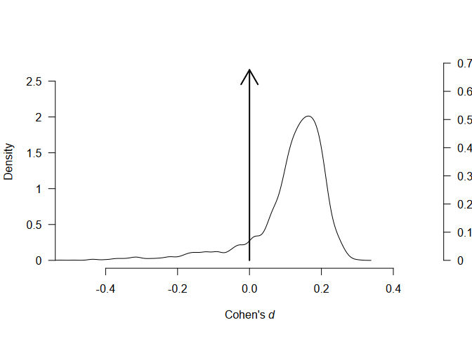
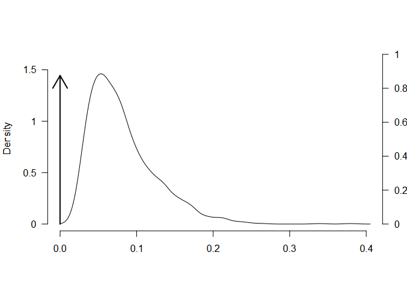
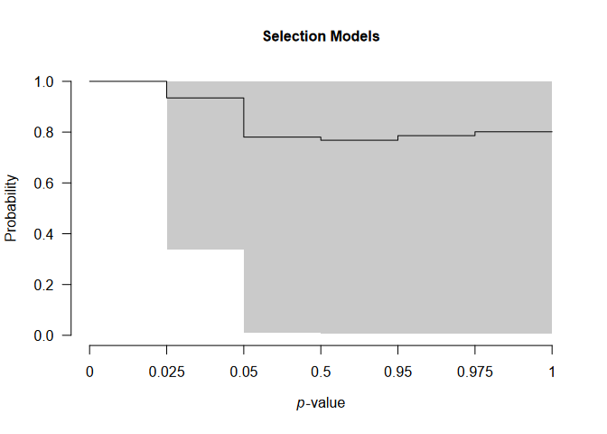
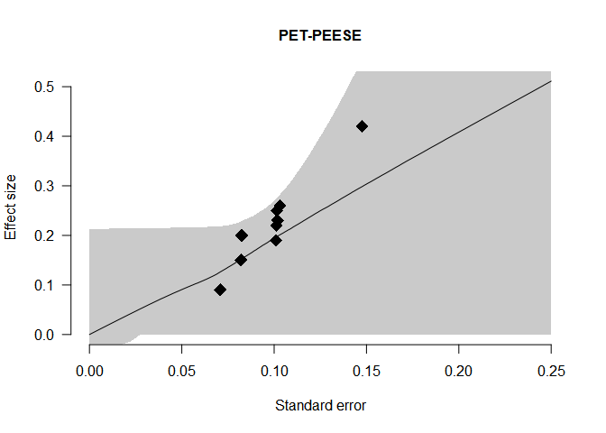
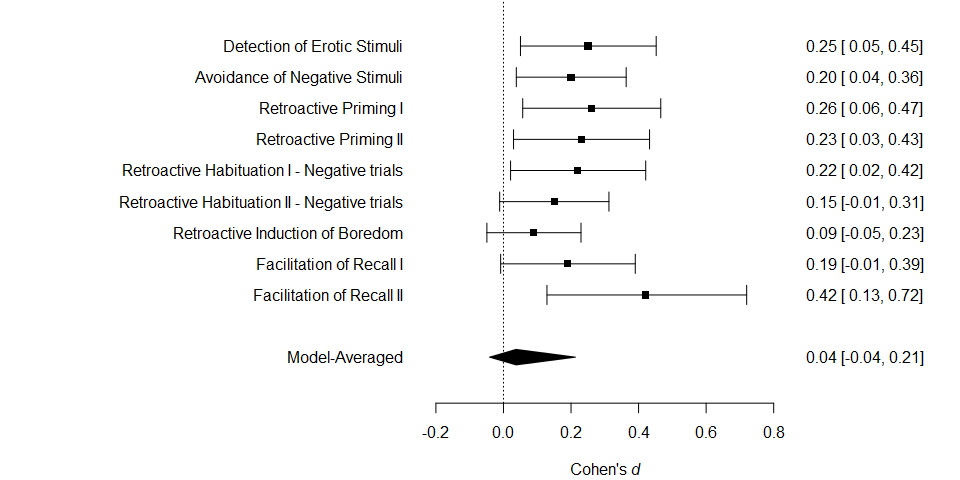
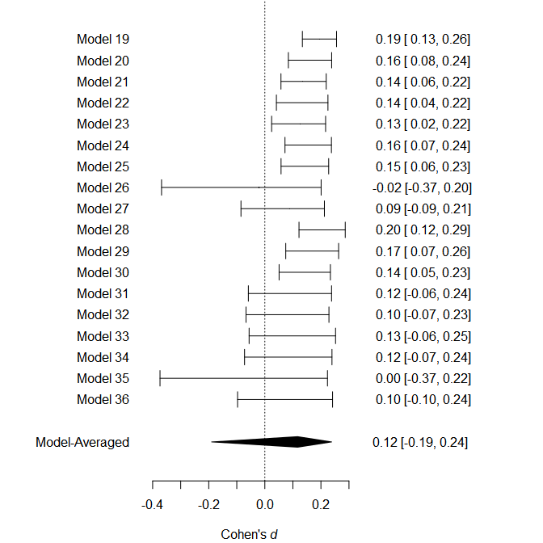
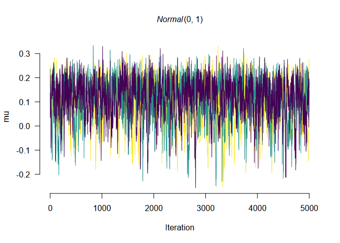

Robust Bayesian Meta-Analysis (RoBMA)
This package estimates an ensemble of meta-analytic models (assuming either the presence or absence of effect, heterogeneity, and publication bias) and uses Bayesian model averaging to combine them. The ensemble uses Bayes factors to test for the presence of absence of the individual components (e.g., effect vs. no effect) and model-averages parameter estimates based on posterior model probabilities. The package includes more complex models such as meta-regression and multilevel meta-analysis. The user can define a wide range prior distributions for the effect size, heterogeneity, publication bias components (including selection, PET, and PEESE style models), and moderators. The package provides convenient functions for summary, visualizations, and fit diagnostics. The package is designed to be user-friendly and provides a wide range of customization options. The package is also integrated into the JASP software (JASP Team, 2020) and can be used via the graphical user interface.
See our manuscripts for technical details and examples:
- Bartoš & Schimmack (2025) (https://doi.org/10.48550/arXiv.2509.07171) introduces meta-analytic z-curve plots for assessing model fit with respect to publication bias
- Bartoš, Maier, & Wagenmakers (2025) (https://doi.org/10.31234/osf.io/9tgp2_v1) extends RoBMA-PSMA into multilevel meta-analysis
- Bartoš, Maier, Stanley, et al. (2025) (https://doi.org/10.1037/met0000737) extends RoBMA-PSMA into meta-regression
- Bartoš, Otte, et al. (2023) (https://doi.org/10.48550/arXiv.2306.11468) outlines binomial-normal Bayesian model-averaged meta-analysis for binary outcomes (+ develops informed prior distributions for log OR, log RR, RD, and log HR in medical settings, also see Bartoš et al. (2021) for informed prior distributions for Cohen’s d, based on the Cochrane Database of Systematic Reviews)
- Bartoš, Maier, et al. (2023) (https://doi.org/10.1002/jrsm.1594) describes the newest version of publication bias adjustment, RoBMA-PSMA, which combines selection models and PET-PEESE,
- Maier et al. (2023) (https://doi.org/10.1037/met0000405) introduces the RoBMA framework and the original version of the method,
- Bartoš et al. (2022) (https://doi.org/10.1177/25152459221109259) provides an accessible tutorial on the method including the implementation in the the user-friendly graphical user interface of JASP (JASP Team, 2020)
We also prepared multiple vignettes that illustrate functionality of the package:
- Tutorial: Adjusting for publication bias in JASP and R - Selection models, PET-PEESE, and Robust Bayesian meta-analysis
- Reproducing Bayesian model-averaged meta-analysis (BMA)
- Robust Bayesian model-averaged meta-regression
- Hierarchical Bayesian model-averaged meta-analysis
- Informed Bayesian model-averaged meta-analysis in medicine
- Informed Bayesian model-averaged meta-analysis with binary outcomes
- Fitting custom meta-analytic ensembles
- Fast Robust Bayesian Meta-Analysis via Spike and Slab Algorithm
- Z-Curve Publication Bias Diagnostics
Updates
Backwards Compatibility
Please note that the major releases of RoBMA break backwards compatibility. The latest version of RoBMA 1 can be installed using
remotes::install_version("RoBMA", version = "1.2.1")and the latest version of RoBMA 2 can be installed using
remotes::install_version("RoBMA", version = "2.3.2")(Or use the source packages archived with at OSF repositories associated with the corresponding projects.)
News
The 3.0 version brings several features to the package:
- multilevel models via the
study_idsargument - meta-regression models via the
RoBMA.reg()function - binomial-normal meta-analytic models via the
BiBMA()function - residual funnel plots via the
funnel()function and meta-analytic z-curve plots via theas_zcurve()andplot()functions - publication bias unadjusted models via the
NoBMA()andNoBMA.reg()functions (wrappers aroundRoBMA()andRoBMA.reg()) - marginal summaries and plots of the regression models via the
marginal_summary()andmarginal_plot()function - prediction intervals, I^2, and H^2 statistics using
summary_heterogeneity()function - the spike and slab algorithm for faster model estimation via the
algorithm = "ss"argument
The 2.0 version brought several updates to the package:
- naming of the arguments specifying prior distributions for the different parameters/components of the models changed (
priors_mu->priors_effect,priors_tau->priors_heterogeneity, andpriors_omega->priors_bias), - prior distributions for specifying weight functions now use a dedicated function (
prior(distribution = "two.sided", parameters = ...)->prior_weightfunction(distribution = "two.sided", parameters = ...)), - new dedicated function for specifying no publication bias adjustment component / no heterogeneity component (
prior_none()), - new dedicated functions for specifying models with the PET and PEESE publication bias adjustments (
prior_PET(distribution = "Cauchy", parameters = ...)andprior_PEESE(distribution = "Cauchy", parameters = ...)), - new default prior distribution specification for the publication bias adjustment part of the models (corresponding to the RoBMA-PSMA model from Bartoš, Maier, et al. (2023)),
- new
model_typeargument allowing to specify different “pre-canned” models ("PSMA"= RoBMA-PSMA,"PP"= RoBMA-PP,"2w"= corresponding to Maier et al. (2023)), -
combine_datafunction allows combination of different effect sizes / variability measures into a common effect size measure (also used from within theRoBMAfunction) - better and improved automatic fitting procedure now enabled by default (can be turned of with
autofit = FALSE) - prior distributions can be specified on the different scale than the supplied effect sizes (the package fits the model on Fisher’s z scale and back transforms the results back to the scale that was used for prior distributions specification, Cohen’s d by default, but both of them can be overwritten with the
prior_scaleandtransformationarguments), - new prior distributions, e.g., beta or fixed weight functions,
- and plenty of small changes to the arguments, output, and etc…
Installation
The package requires JAGS 4.3.2 to be installed. The release version can be installed from CRAN:
install.packages("RoBMA")and the development version of the package can be installed from GitHub:
devtools::install_github("FBartos/RoBMA")Example
To illustrate the functionality of the package, we fit the RoBMA-PSMA model from the example in Bartoš, Maier, et al. (2023) to adjust for publication bias in the infamous Bem (2011) “Feeling the future” pre-cognition study. The RoBMA-PSMA model combines six selection models and PET-PEESE to adjust for publication bias. As in the pre-print, we analyze the data as described by Bem et al. (2011) in his reply to methodological critiques.
First, we load the package and the data set included in the package.
library(RoBMA)
#> Loading required namespace: runjags
#> Loading required namespace: mvtnorm
#> RoBMA version 3.3 now features spike-and-slab style model-averaging via the 'algorithm = "ss"' argument.
#> See 'vignette("FastRoBMA", package = "RoBMA")' for more details ('algorithm = "ss"' argument will become the default setting in the future major release of the package).
data("Bem2011", package = "RoBMA")
Bem2011
#> d se study
#> 1 0.25 0.10155048 Detection of Erotic Stimuli
#> 2 0.20 0.08246211 Avoidance of Negative Stimuli
#> 3 0.26 0.10323629 Retroactive Priming I
#> 4 0.23 0.10182427 Retroactive Priming II
#> 5 0.22 0.10120277 Retroactive Habituation I - Negative trials
#> 6 0.15 0.08210765 Retroactive Habituation II - Negative trials
#> 7 0.09 0.07085372 Retroactive Induction of Boredom
#> 8 0.19 0.10089846 Facilitation of Recall I
#> 9 0.42 0.14752627 Facilitation of Recall IIThen, we fit the meta-analytic model ensemble that is composed of 36 models (the new default settings of RoBMA fitting function). These models represent all possible combinations of prior distributions for the following components:
- effect size (the mean parameter )
- a spike at zero, representing the null hypothesis of the absence of effect
- a standard normal distribution, representing the alternative hypothesis of the presence of effect
- heterogeneity (the heterogeneity parameter )
- a spike at zero, representing the null hypothesis of the absence of heterogeneity (i.e., fixed effect meta-analysis)
- an inverse gamma distribution with shape = 1 and scale = 0.15, based on Erp et al. (2017), representing the alternative hypothesis of the presence of heterogeneity (i.e., random effect meta-analysis)
- publication bias
- no prior distribution, representing the absence of publication bias
- eight prior distributions specifying two two-sided weight functions, four one-sided weight functions, and PET and PEESE publication bias adjustment, representing the presence of publication bias
The prior odds of the components are by default set to make all three model categories equally likely a priory (0.5 prior probability of the presence of the effect, 0.5 prior probability of the presence of the heterogeneity, and 0.5 prior probability of the presence of the publication bias). The prior model probability of the publication bias adjustment component is further split equally among the selection models represented by the six weightfunctions and the PET-PEESE models.
fit <- RoBMA(d = Bem2011$d, se = Bem2011$se, study_names = Bem2011$study, seed = 1)The main summary can be obtained using the summary.RoBMA() function.
The first table shows an overview of the ensemble composition. The number of models, the prior and posterior model probabilities, and inclusion Bayes factor of the ensemble components representing the alternative hypothesis of the presence of the effect, heterogeneity, and publication bias, We can see the data show very weak evidence, barely worth mentioning, against the presence of the effect ( -> ), moderate evidence for the absence of heterogeneity ( -> ), and strong evidence for the presence of publication bias ().
The second table shows model-averaged estimates weighted by the individual models’ posterior probabilities. The mean estimate , 95% CI [-0.041, 0.213], is very close to zero, corresponding to the a priory expected absence of pre-cognition. The heterogeneity estimate has most of its probability mass around zero due to the higher support of models assuming absence of the heterogeneity. The parameters omega, representing the publication weights at each p-value interval are decreasing with increasing p-values, showing the publication bias, as well as the non zero PET and PEESE estimates.
summary(fit)
#> Call:
#> RoBMA(d = Bem2011$d, se = Bem2011$se, study_names = Bem2011$study,
#> seed = 1)
#>
#> Robust Bayesian meta-analysis
#> Components summary:
#> Models Prior prob. Post. prob. Inclusion BF
#> Effect 18/36 0.500 0.324 0.479
#> Heterogeneity 18/36 0.500 0.125 0.143
#> Bias 32/36 0.500 0.942 16.323
#>
#> Model-averaged estimates:
#> Mean Median 0.025 0.975
#> mu 0.037 0.000 -0.041 0.213
#> tau 0.010 0.000 0.000 0.113
#> omega[0,0.025] 1.000 1.000 1.000 1.000
#> omega[0.025,0.05] 0.935 1.000 0.338 1.000
#> omega[0.05,0.5] 0.780 1.000 0.009 1.000
#> omega[0.5,0.95] 0.768 1.000 0.007 1.000
#> omega[0.95,0.975] 0.786 1.000 0.007 1.000
#> omega[0.975,1] 0.801 1.000 0.007 1.000
#> PET 0.759 0.000 0.000 2.805
#> PEESE 6.183 0.000 0.000 25.463
#> The estimates are summarized on the Cohen's d scale (priors were specified on the Cohen's d scale).
#> (Estimated publication weights omega correspond to one-sided p-values.)We can visualize the estimated mean and heterogeneity parameters using the plot.RoBMA() function. The arrows in both figures represent the point probability mass at and , corresponding to the null hypotheses of the absence of effect and heterogeneity, both increasing in the posterior model probability from 0.5 to 0.676 and 0.875 respectively.

plot(fit, parameter = "tau")
We can further visualize the publication bias adjustments of selection models, visualizing the posterior estimate of the model-averaged weightfunction that shows a sharp decrease in the publication weights of studies with p-values above the “marginal significance” (0.10) level,
plot(fit, parameter = "weightfunction", rescale_x = TRUE)
and the PET-PEESE publication bias adjustment, visualizing the individual studies’ standard errors and effect sizes as diamonds and the model-averaged estimate of the regression lines that shows a steady increase of effect sizes with increasing standard errors.

The usual meta-analytic forest plot can be obtained with the forest() function,
forest(fit)
and visualization of the effect size estimates from models assuming presence of the effect can be obtained with the plot_models() function.
plot_models(fit, conditional = TRUE)
Apart from plotting, the individual model performance can be inspected using the summary.RoBMA() function with argument type = "models" or the overview of the individual model MCMC diagnostics can be obtained by setting type = "diagnostics" (not shown here for the lack of space).
We can also visualize the MCMC diagnostics using the diagnostics function. The function can display the chains type = "chain" / posterior sample densities type = "densities", and averaged auto-correlations type = "autocorrelation". Here, we request the chains trace plot of the parameter of the most complex model by setting show_models = 36 (the model numbers can be obtained from the summary function with type = "models" argument).
diagnostics(fit, parameter = "mu", type = "chains", show_models = 36)
The package allows to fit highly customized models with different prior distribution functions, prior model probabilities, and provides more visualization options. See the documentation to find out more about the specific functions: RoBMA(), priors(), plot.RoBMA(). The main package functionality is also implemented within the Meta Analysis module of JASP 0.14 (JASP Team, 2020) and will be soon updated to accommodate the 2.0 version of the package.